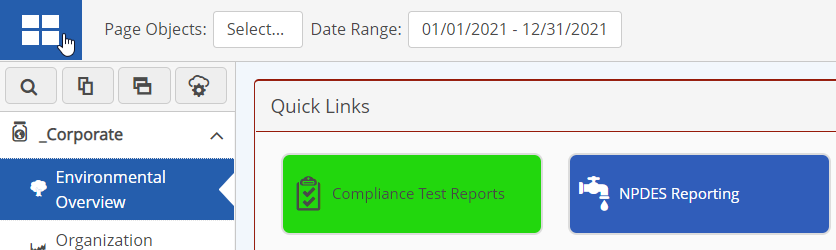
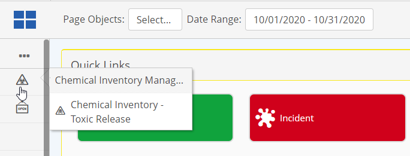
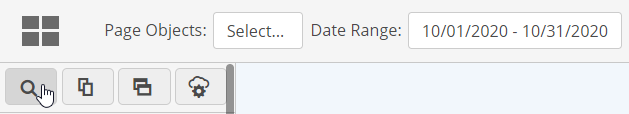
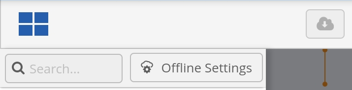
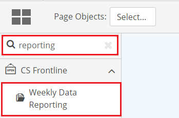
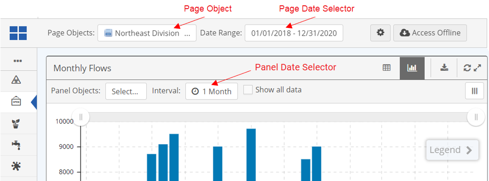

If the Portal is your main access to your system, it will be displayed by default when you log in.
To open the Portal from the system or from another app, select Portal from the main menu. For full functionality, open the app in a new browser window.
After opening the App in a separate tab, add the page to your browser bookmarks to access it directly in future. If you will be working offline, you will need to use this link to access the offline data cache.
On a mobile device, you can select the Portal App from the menu after logging.
Portal page sets and pages are shown in the menu on the left. The menu may show page symbols and text, or page symbols only in collapsed view. Select the menu button (top left) to expand or collapse the menu.

Pages are grouped in page sets. Select a page set to expand it and display the pages. Select a page to open it for view.

By default the Portal will open to the last page you viewed in the Portal. Clearing the browser cache will reset the default to the home page.
To search for a page or panel by name:
Click the Search icon, below the main menu button.
On a mobile device, click the ... button first.
Desktop:

Mobile:

Enter a few characters of the page or panel name.
As you type, the pages will automatically be filtered in the menu. Select a result to display the page.

Depending on the page configuration, you may have the options to select a Location and/or a data range.
Object Selector: If visible, the object selector can be used to change the data objects displayed on the page (for example, you may be able to select a facility). Object selectors may also be available on page panels, to allow for further filtering of the objects selected for the page (for example, to select an area at the facility). You will only see objects to which you have permissions.
Date Range: If visible, the date range field at the top of the page shows the default date range for the data displayed on the page. The date range selector may include choosing a period (such as This Month or Last Month), or allow you to select a custom date range with start and end dates. Either or both options may be available. The date range will apply to all the panels on the page unless a panel has its own date range field. A date range selected for a panel will override the page date range.

When you are finished working, it is recommended you sign out of the system with the Log Out button at the bottom of the main menu.